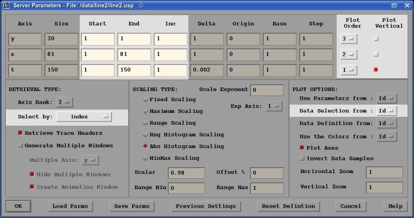

- Axis Selection:
Select the subset of the dataset to display by selecting the "Start",
"End" and "Inc" values for each corresponding axis. Don't worry about
the sign of the "Inc" values because the signs will get reset after based
on the "Start" and "End" values. Thus "End" can be greater
than "Start", resulting in the axis being displayed in reverse order.
By default the axis selection is based on axis index values from "1" through the
"Size" values. However, you can change the selection based on Delta/Origin
or Base/Step as selected from the "Select by:" option list.

- Axis Order:
Select whether an axis is displayed vertically or horizontally by selecting the
"Plot Vertical" toggle on or off for each corresponding axis.
Select the order by which the axes are displayed by selecting the
"Plot Order" option lists for each corresponding axis. The axes plotted
vertically will always be plotted first (lower order) than the horizontally
plotted axes. Selecting the order for any axis will be limited and will adjust
the order for all the axes based on the Plot Vertical toggles. For example if
you want to plot several time slices with y-axis vertical and x-axis horizontally
and each time slice across horizontally, then select y-axis vertically, t-axis
and x-axis horizontally, and the t,x,y axes in 3,2,1 Plot Order (the y-axis will
be forced to be Plot Order 1).
- Reset Selection:
You can also setup the data selection from a currently displayed window by selecting
the Window Id # from the "Data Selection from:" option list.